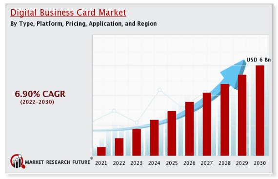
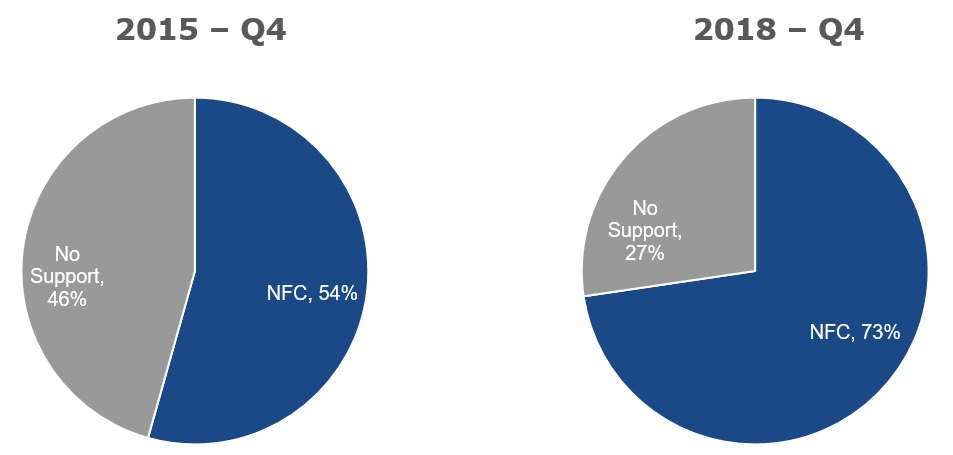
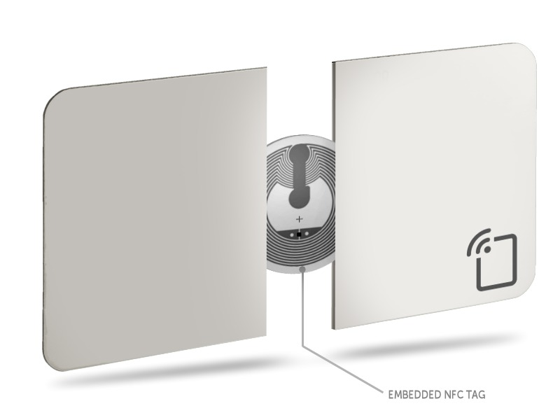
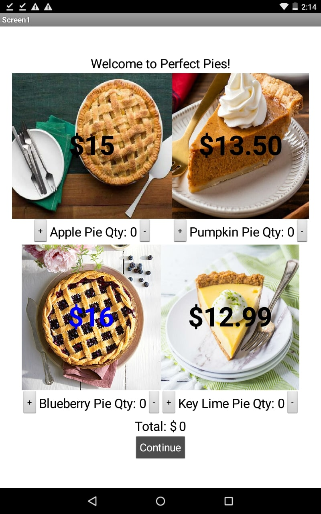

Smart Business Cards

This image provides data showing how the digital business card industry has grown and is expected to grow even more over the next seven years. By 2030, the market is expected to be worth six billion dollars, creating a global market that is used daily by countless people around the world.

These pie charts display the increase in compatibility of NFC devices and microchips, which are located in smart business cards. Between 2015 and 2018, there was almost a 20% increase in NFC compatibility - that's only within a span of three years; as technology continues to advance, one can only imagine how much more compatible NFC devices will be in the next decade.
This image shows what a smart business card looks like and what the interface looks like when the smart business card's NFC microchip connects to a NFC-compatible device. The smart business card looks like any other paper business card, but the microchip's ability to connect to any compatible device makes using smart business cards seamless.

The disk shown nestled between the two halves of the smart business card is the NFC microchip tag. This is the chip that does it all - it is what powers the card and stores the data so that when it is scanned, the information shows up.
My Favorite Projects

For my final app project, I created an app similar to that of a pie business, called Perfect Pies. There are four types of pie you can select from: apple pie, pumpkin pie, blueberry pie, and key lime pie. To make this app, I created countless buttons and labels that enable users to choose their pie quantity. There are images of the pies to show what they look like. Each pie has its own price. To store the total price as well as the chosen pies, I used a database that stores the data and transfers it to a Google Sheet. After clicking "Continue", a review screen appears where you can review your order before placing it. I enjoyed this project because it challenged me - I had never used MIT App Inventor before this so using the program was difficult.
This was the final Photoshop project I completed. I came up with a Six-Word Memoir that had some connection to my life. From there, I added numerous images that together, cultivated my personality, hobbies, and lifestyle. For five of the images, I had to use some feature of Photoshop, such as the Clone Stamp tool and the Polygonal Lasso tool. I enjoyed combining all the tools I have learned to create the final collage.